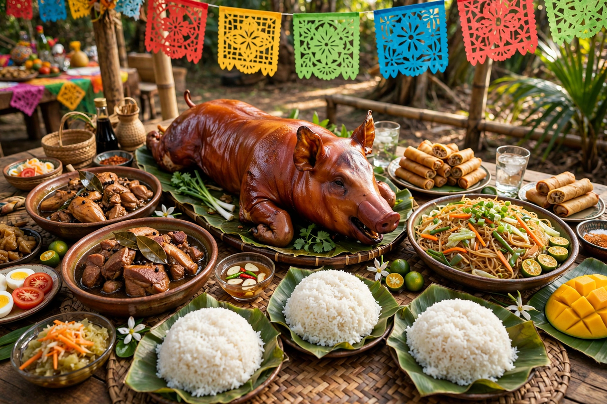

Filipino cuisine
From Wikipedia, the free encyclopedia

Filipino cuisine is the cooking of the Philippine archipelago — a layered table of indigenous Austronesian foundations, Chinese trade ingredients, three centuries of Spanish colonisation, and an American century, bound by a taste for the sour, the salty and the fermented. Its emblematic dishes are adobo (meat braised in vinegar, soy sauce, garlic and bay), sinigang (a tamarind-soured soup), lechon (whole roast pig with shattering skin), kare-kare (oxtail in peanut sauce), and pancit noodles in a dozen forms. Meals centre on rice, eaten kamayan-style by hand at celebrations, with sawsawan dipping sauces tuned by each diner.
Layers of influence
Chinese traders and settlers brought noodles (pancit, from Hokkien pian-e-sit), lumpia spring rolls, soy sauce and the wok; Spain brought tomatoes, garlic, olive oil, fiestas and dishes like caldereta and embutido, often cooked by Chinese-Filipino mestizo kitchens; America brought canned goods, hot dogs and spaghetti — which Filipinos sweetened with banana ketchup and made their own (Jollibee's style). Banana ketchup itself is Filipino ingenuity: food technologist Maria Orosa developed it during the Second World War when tomatoes were scarce. Fermentation runs deep — bagoong shrimp paste, patis fish sauce, cane and coconut vinegars — and souring agents (tamarind, calamansi, guava, bilimbi) do the work lemons do elsewhere.
Feasts and fame
The lechon is the fiesta's crown — Anthony Bourdain famously called Cebu's version the best pig he ever ate — and regional pride is granular: Pampanga is the culinary capital, Bacolod owns chicken inasal, Bicol cooks with coconut milk and serious chilli. Halo-halo, the shaved-ice sundae of beans, jellies and ube ice cream, distils the whole cuisine into a dessert glass: mixed, sweet, improbable, and greater than its parts. Filipino food's international moment, long predicted in the 2010s, arrived through a generation of diaspora chefs — and through ube, whose purple now flavours everything from lattes to doughnuts worldwide.